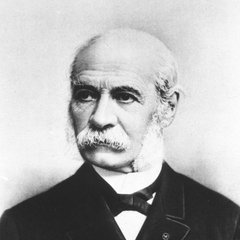

時間知覚
子どもの頃の夏は長かった。今年の夏は指の間をすり抜けていく。
150年前、一人のフランスの哲学者がこの非対称を数式にした。
ポール・ジャネが論文『内的な錯視』で、主観的時間は年齢に反比例するという仮説を提唱。
同年、エジソンが蓄音機を発明し「声の記録」が初めて可能に。露土戦争勃発。エイサフ・ホールが火星の衛星フォボスとダイモスを発見した年でもある。
体験: 2つのスライダーと2つの時計で、自分の「心時間」がどれだけ速くなっているかを可視化する。
小学生の頃の夏休みは、終わりが来ないように思えた。7月の終わりと8月の終わりのあいだには、どう考えても半年分くらいの距離があった。プールに行き、セミを追い、宿題のことは9月になるまで忘れていた。
大人になった今年の夏は、気がついたら終わっていた。「そういえば今年の夏、何をしたっけ」と思い返しても、数枚のスナップ写真のような記憶しか残っていない。時計は同じ速さで動いているはずだ。カレンダーのマス目の大きさも変わっていない。それなのに、夏の厚みだけが薄くなっている。
これは錯覚ではない。少なくとも、単なる気のせいとして片付けていい現象ではない。
時計の針は一定の速さで進む。しかし「1年」という単位そのものの重さは、生きてきた長さと引き換えに軽くなっていく。この記事では、150年かけて少しずつ形になってきた時間知覚の仮説をたどりながら、自分自身の心時間がどれだけ速くなっているかを目と耳で確かめる。
冒頭のあの感覚——「子どもの頃の夏は長かったのに、今年の夏は一瞬だった」——は、誰かの気分の問題ではない。年齢を重ねるとともに時間の流れが速くなる、という感覚は、文化も時代も越えてくり返し記録されてきた。そして、この現象を最初に数式めいた形で言語化したのは、ウィリアム・ジェームズでもフロイトでもなく、19世紀のパリの一人の哲学者だった。
ポール・ジャネは1877年、『哲学評論』誌に短い論文を寄せた。タイトルは「Une illusion d'optique interne」——直訳すれば、内的な錯視。ジャネはそこで、一見しただけでは当たり前に見える観察をした。誰でも、自分の学校時代の最後の8年か10年を思い出せる。あれは一世紀分の厚みがあった。ところが、つい最近の8年か10年はどうか。それは一時間のように縮んでいる。同じ長さのはずなのに、なぜか。
"Que l'on se rappelle ses dernières années de collège : ce fut un siècle. Comparez-y les huit ou dix dernières années de la vie : c'est l'espace d'une heure."
自分の学校時代の最後の数年を思い出してみなさい——それは一世紀分の長さがあった。これを人生の最後の8年か10年と比べてみなさい。それは一時間にすぎない。
— ポール・ジャネ『内的な錯視』、『哲学評論』第3巻（1877年）
ジャネが提案した仮説はとてもシンプルだ。ある年齢において感じられる一定期間の長さは、その人の「それまでに生きてきた人生の総量」に反比例する。10歳の子どもにとって1年は人生全体の1/10だが、50歳の大人にとっては1/50でしかない。だから後者は前者の5倍速く流れる。この素朴な式は、のちに「ジャネの法則ジャネの法則 (Janet's law)主観的な1年の長さは、そのときまでに生きた年数に反比例する、という仮説。13歳の1年は生涯の1/13、52歳の1年は1/52なので、52歳のほうが4倍速く感じる、という単純な算数になる。」あるいは「対数時間（log time）」と呼ばれるようになる。
ジャネの法則に入る前に、ひとつだけ前提を共有したい。この記事を通じて、私は「時計が示す時間」と「私たちが感じる時間」を別物として扱う。前者を物理時間、後者を心時間と呼ぶ。これはデューク大学のエイドリアン・ベジャンが2019年の論文で使った言い方で、両者がズレることこそが、時間知覚のすべての不思議の入口になる。
物理時間と心時間——同じ1分でも、中に流れる「画像」の数はまったく違う。
物理時間は、水晶振動子や原子時計が刻む、揺るぎない時間のことだ。これは誰にとっても同じ速度で進む。一方の心時間とは、脳が「いま何かが起きた」「いま別のことが起きた」と区切りを入れながら積み上げていく、主観的な時間のことだ。脳の区切りの密度が濃い時間は、あとから振り返ると長く感じられる。薄い時間は、実際は長くても、短かったように感じられる。
この区別を入れた瞬間に、「時間は客観的に一定の速度で進んでいる」という素朴な感覚はいったん脇に置かれる。時計の秒針は確かに1秒ずつ進んでいる。だが、その1秒のあいだに脳が経験する心的画像心的画像 (mental image)脳が外界の情報を受け取って、そこから作り出す内的な「場面」のこと。写真そのものではなく、あとから思い出せる形に整理されたイメージ。ベジャンの論文では、これが心時間の基本単位として使われる。の数は、人によっても年齢によっても違う。同じ物理時間を流れても、心時間の「厚み」は一定ではない。
さて、ジャネの式に戻ろう。式そのものはこう読める。感じられる1年の長さ ∝ 1 ÷ 年齢。5歳にとって1年は人生の5分の1、つまり20%。50歳にとって1年は50分の1で、わずか2%だ。単純に割り算すれば、5歳の1年の感覚は50歳の10倍ということになる。下の図は、ジャネの式に従って「各年齢で感じる1年の相対的な長さ」を縦バーで並べたものだ。5歳のバーが飛び抜けて高く、20歳以降は似たような低さに張り付いていく。
年齢ごとの「1年の重さ」（5歳の1年=100%として正規化）
このバーには、一度聞くと頭から離れなくなる含意がある。ジャネの式が正しいとすると、あなたの「主観的な人生」の半分は、7歳までに過ぎている。なぜなら、0歳から7歳までの7年間の主観的な総量は、7歳から到達しうる人生の終わりまでの残りの年数の主観的な総量と、数学的には同じオーダーになるからだ。体感される残りの人生は、カレンダー上の残り年数よりずっと短い。これが単なる気分の問題ではないと、ジャネは言いたかった。
生涯の時間地図
スライダーで「現在の年齢」と「寿命の見込み」を動かすと、横バーが塗り替わる。赤色があなたの主観的にすでに生きた割合、ベージュ色がこれから先。ジャネの法則 (主観的時間 ∝ 1/年齢) に従って、各年齢の1年が占める面積を対数的に計算している。
各年齢 n での「1年の重み」を 1/n として合計し、誕生から寿命までの積分のうち、どこまで進んだかを赤色で表示している。ジャネの法則は厳密な物理法則ではなく、主観的時間の粗いモデルにすぎない点に注意してほしい。
この数式が本当に正しいと言いたいわけではない。ジャネ自身も、これが最終的な答えだとは考えていなかった。ただ、彼が示したかったのは——主観的な時間は年齢に対して完全には中立ではない、その歪みは比例ではなく割合で効いてくる、ということだった。のちに「ジャネの法則」と呼ばれる仮説は、この直感を粗いままで公式にしたものだ。

ポール・ジャネ
PAUL JANET (1823–1899)
ソルボンヌの哲学教授。スピノザ研究や道徳哲学で知られるが、時間知覚に関しても短い論文を残した。1877年の『哲学評論』に寄せた「内的な錯視」は、ウィリアム・ジェームズが1890年の『心理学原理』で引用して広く知られることになる。ジェームズは式そのものには距離を置いたが、ジャネの提起した問い——「なぜ過去は年齢とともに圧縮されるのか」——を自身の議論の出発点にした。
ジャネの法則の「1/年齢」という形は、じつは19世紀の心理物理学とよく似た顔をしている。エルンスト・ウェーバーとグスタフ・フェヒナーが定式化したウェーバー・フェヒナーの法則ウェーバー・フェヒナーの法則刺激の強さが増すほど、それを「同じだけ増えた」と感じるのに必要な量も増える、という心理物理学の法則。たとえば50gの重りに10gを足すと気づくが、500gに10gを足しても気づかない。感覚は刺激の対数に比例する、という形でよく表される。は、もともと重さや明るさや音の大きさといった感覚に対するものだった。「同じだけ増えた」と感じるために必要な刺激の量は、すでにある刺激の強さに比例する——つまり、感覚は刺激の対数に比例する。
| 感覚の種類 | 物理的な刺激 | 主観的に感じる量 |
|---|---|---|
| 重さ | 50g → 100g（+50g） | 明らかに重くなった |
| 重さ | 1kg → 1.05kg（+50g） | ほぼ気づかない |
| 音の大きさ | 静かな部屋+ささやき声 | 明瞭に聞こえる |
| 音の大きさ | 繁華街+ささやき声 | 完全に埋もれる |
| 時間（ジャネ説） | 5歳にとっての1年 | 人生の20%ぶんの重み |
| 時間（ジャネ説） | 50歳にとっての1年 | 人生の2%ぶんの重み |
ジャネの仮説は、この「感覚は刺激の対数対数 (logarithm)簡単に言うと、「何倍になったか」を「何段階増えたか」に読み替える数のものさし。1, 10, 100, 1000 を 0, 1, 2, 3 に押し込めるイメージ。感覚の法則でよく登場するのは、人間の脳が絶対的な量よりも「何倍か」で物事を捉えるのが得意だから。に比例する」という一般則を、時間という奇妙な感覚に当てはめたものとも読める。ジャネ自身がウェーバーを明示的に引用したわけではないが、後世の研究者はこの対応関係に繰り返し注目してきた。感覚一般が相対的であるなら、時間の感覚だけが例外である理由はない。
✗ よくある誤解
「歳を取って時間が速く感じるのは、単に忙しいからだ。スケジュールが詰まっていると時間が飛ぶ。」
✓ 実際は
忙しさは加速に効いているかもしれないが、それだけでは夏休みの厚みの差を説明できない。暇で退屈な老人も同じように「10年前がつい昨日」と言う。忙しさよりもっと深いところに歪みがある。
✗ よくある誤解
「本人の性格や気分の問題。気にしなければ感じない。」
✓ 実際は
20歳から90歳まで幅広い年齢で調査しても、「過去10年が速く感じるか」という質問への答えは、年齢とともに一貫して強くなる。性格傾向や文化圏を問わずこの方向性は崩れにくい。個人差はもちろんあるが、傾向そのものは頑健だ。
ここまでで、ジャネの法則の形と気分は伝わったと思う。ただ、バーや数式を眺めるのと、自分の心時間が実際に何倍速くなっているかを「目と耳で」感じるのは、別のことだ。次の仕掛けでは、2つの円時計を並べて同時に動かす。左は「あなたが5歳だったときの心時計」、右は「現在のあなたの心時計」。物理時間の1分のあいだに、左の時計が一周するとき、右の時計はいったいどこまで進むか。
5歳の時計 vs いまのあなたの時計
🔊 音が鳴りますスライダーであなたの現在の年齢を入れ、START を押すと、物理時間の60秒が進むあいだに、2つの「心時計」がそれぞれの速度で動く。メトロノーム音も同じ速度比で鳴る。ジャネ式では、現在年齢 A の1秒は、5歳の1秒にくらべて 5/A 倍しか進まない。
0
心時間 (秒)
0
心時間 (秒)
左の時計は5歳基準の心時間で動き、右はジャネ式 (相対速度 = 5 / 現在年齢) で減速する。メトロノーム音はWeb Audio APIで発生させる純音。物理的な60秒のあいだに実際に起きる神経活動の差を再現しているわけではなく、ジャネの式が予言する「主観的速度比」を可聴化した概念的な可視化にあたる。
60秒が経ったとき、左の時計は当然60の目盛を指している。一方、右の時計の数字はあなたが何歳かによって変わる。35歳なら、右の時計は9秒分しか進まない。つまり、60秒の物理時間は、35歳のあなたの主観には9秒分しか当たらない。あるいは裏返せば、いまのあなたの1分は、5歳のときの約7倍の速さで流れている。これが心時間の非対称の正体だ——ということに、ジャネの式はなっている。
ジャネの式は現象を粗く記述したものにすぎない。では、その背後で何が起きているのか。現代の心理学と神経科学は、少なくとも3つの異なる説明を用意している。どれも単独では不十分で、どれも互いに排他的ではない。時間知覚は、これら複数のメカニズムの合流点で歪む。
仮説A: 比率仮説（ジャネ）
1年は生涯に対する割合として感じられる
「1年」は絶対量ではなく相対量として扱われるという発想。5歳児にとっての1年は自分の全人生の20%ぶんの出来事を含む。50歳にとっての1年は2%ぶんだ。脳がこの「割合」を感覚の単位にしているなら、加齢にともなう加速はほぼ自動的に出てくる。
日常の例: 同じ「1万円」でも、月収10万の学生には重く、月収100万の社長には軽い。金額は同じでも、それが「すでにある量」に対してどれだけ増やすかで重みが変わる。時間もこれと同じことが起きているかもしれない、という仮説。
ただし、比率仮説にはひとつ弱点がある。これは「いま流れている時間」よりも「振り返ったときの時間」の説明として強い。現在進行形で夏休みが速く過ぎているとき、その瞬間には「割合」は意識されていない。比率仮説はおそらく、記憶の側の操作を説明している。
仮説B: 新奇性仮説（ジェームズ以降）
新しい経験の密度が時間の厚みを作る
ウィリアム・ジェームズは1890年の『心理学原理』でジャネを紹介したあと、すぐに別の説明を足した——若いころは毎日が新しい経験で埋まっていて、記憶の内容が複雑で多面的になる。だからあとから振り返ると、充実した長い旅行を思い出すときのように、長く感じられる。歳を取ると日常は単調になり、記憶は単純化される。だから短く感じられる。
日常の例: 初めて行った海外旅行の1週間は異常に長く感じた。一方、毎日同じ通勤ルートで過ぎる1週間は記憶にほとんど残らない。新奇性の密度が違うと、あとから測った時間の長さも違ってくる。
2020年代の研究はこの仮説をさらに精密にしている。120人を対象にした2020年代の研究では、自伝的記憶の「量」そのものよりも、新しい記憶を形成する能力が「過去10年が速かったか」という感覚とよく対応することが示された。つまり、年を取ると記憶が減るというより、新しい記憶が積み上がりにくくなっていることの方が、加速の本体に近い。
仮説C: 物理仮説（ベジャン）
神経処理そのものが遅くなる
デューク大学の機械工学者エイドリアン・ベジャンが2019年に『European Review』誌で提案した物理学寄りの説明。加齢にともなって、脳が心的画像を1つ生成するのにかかる時間がじわじわ伸びる、というもの。神経の経路が長く複雑になり、信号が通る道が劣化する。視覚情報を処理する基本単位であるサッカードサッカード (saccade)目を動かすときに起きる、高速でカクッとした飛躍的な動き。人間は景色を「なめらかに見ている」つもりでも、実際には1秒に3〜5回サッカードを打ちながら、離散的な画像を繋ぎ合わせて見ている。の頻度も加齢とともに落ち、精度も下がる。
結果として、同じ物理時間のあいだに脳が登録できる心的画像の枚数が減る。ベジャンのフレーズでは「mind time」と「clock time」がズレる。若いころは1秒に多くの画像を処理していたから、あとから振り返ると、その1秒の中身が濃く、長く感じる。歳を取ると中身が薄くなる。
日常の例: 古いパソコンでスローモーション動画を撮ろうとして、カクカクになる状況を想像してほしい。実時間は同じなのに、記録される「コマ数」が減るので、あとから再生すると内容が痩せて見える。ベジャンの説はこの比喩に近い。
ベジャンの仮説 (2019)——物理時間と心時間のズレがどこで生じるか
注意したいのは、この3つの仮説は競合しているように見えて、じつは部分的に重なっているということだ。ジャネの比率は現象の記述、ジェームズの新奇性は記憶側のメカニズム、ベジャンの物理は知覚側のメカニズム——階層が違う。どれか一つが正しいというより、3つが足し算されたものが、私たちの実感する加速になっている可能性が高い。
下の年表は、時間知覚と加齢についての主要な議論を整理したものだ。赤い丸はジャネの法則そのものに直接関わる出来事、白い丸は周辺の重要な寄り道を示している。150年かけて、粗い観察が少しずつ精密な仮説と測定に置き換わっていった流れが見える。
1877
ジャネ『内的な錯視』
ソルボンヌの哲学者ポール・ジャネが『哲学評論』に短い論文を発表。主観的な時間は年齢に反比例する、という仮説を、簡単な言葉で述べた。のちに「ジャネの法則」と呼ばれるこの主張は、同じ年、エジソンが蓄音機を発明したのと同じ時代の空気のなかで生まれた。
1890
ジェームズ『心理学原理』第15章
ハーバードの心理学者ウィリアム・ジェームズが、著書のなかでジャネの観察を紹介。「これは現象を記述しているが、根本的な心理法則とは言えない」と距離を取りつつ、若いころの記憶の「多様さ」と加齢後の「単調さ」の差を、自前の説明として追加した。ジャネの法則が英語圏に伝わった瞬間。
1860
フェヒナー『心理物理学原論』
ウェーバー・フェヒナーの法則の原典。感覚は刺激の対数に比例するという一般則が、ジャネ以前にすでに確立されていた。時間知覚を対数的に見るという発想は、この心理物理学の流れと無関係ではない。
1960s
「ログタイム」の再発見
計算尺の対数スケールに着想を得て、何人かの研究者が独立に「時間は対数的に感じられる」という仮説を再提案する。ジャネの1877年の論文はこの時点ではほぼ忘れられており、後年になって再発見される。
2019
ベジャン「Why the Days Seem Shorter as We Get Older」
デューク大学のエイドリアン・ベジャンが『European Review』に発表。サッカード頻度、神経経路の長さ、信号劣化といった物理的な変化を根拠に、「mind time」と「clock time」のズレを工学的に説明しようとした。哲学の仮説だった時間知覚の問題が、機械工学の言葉で再定式化された論文として話題になった。
2022
ウィアーデン、ジャネ1877論文の英訳
英キール大学のジョン・ウィアーデンが『Timing & Time Perception』誌にジャネの原論文の英訳と解説を発表。145年間、ジャネの原典は哲学史と心理学史の隙間で半ば忘れ去られていた。この翻訳によって、現代の時間知覚研究は自分たちのルーツと対話し直せるようになった。
ここまでを整理すると、こう言える。私たちが「歳を取ると時間が速い」と感じるとき、実際に時計が速く回っているわけではない。1年という単位の物理的な長さは変わらない。変わるのは、その1年のなかにどれだけの出来事を詰め込めるか、そしてその1年が人生全体のどれだけの割合を占めるかだ。前者は知覚と神経の問題で、後者は記憶と構造の問題だ。時間そのものが縮むのではなく、1年という容器の重みが相対的に軽くなっていく。
"The rate of passage of subjective time is proportional to the age of the person making the judgement."
主観的時間の流れる速度は、その判断をする人の年齢に比例する。
— ジョン・ウィアーデン、ジャネ1877論文の英訳解題『Timing & Time Perception』第10巻 (2022年)
この非対称は、ただの不思議な錯覚として片付けるには重たい含意を持っている。20歳を過ぎたあたりから、1年の主観的な重みは急速に減っていく。残りの人生をカレンダーで数えれば60年あっても、主観的にはその半分にも満たない——これがジャネの式が粗い形で示していることだ。だとすると、残りの心時間をどう伸ばすか、という問いが自然に出てくる。新奇性仮説と物理仮説は、幸いなことに、その問いに少しだけ実用的な手がかりをくれる。
加速を止める方法はない。だが、遅らせる方向の手がかりはいくつかある。ただしどれも万能ではない。
一つ目は、新奇性を計画的に入れる新奇性の計画的導入ジェームズ以降の仮説に従えば、新しい経験は記憶を「濃く」する。通勤ルートを変える、普段読まないジャンルの本を読む、知らない街を歩く、といった小さな新奇性が、あとから振り返ったときの時間の厚みを少しだけ取り戻すかもしれない。こと。通勤ルートを変える、初めての料理を作る、知らない街を歩く。単調さを壊すことで、記憶側の仮説が予言する「1年の密度」を少しだけ上げられる。ただし、新奇性だけで加速全体を止められるわけではない。ベジャンの物理的説明が正しいなら、新奇性を入れても処理速度そのものは若返らない。
二つ目は、身体と感覚の解像度を保つ感覚解像度の維持ベジャンの仮説では、加齢による時間加速の一部は神経経路と知覚系の劣化から来る。睡眠、運動、視覚と聴覚のケアによって、心的画像の処理速度を若いころに近い水準に保つことができれば、主観的に単位時間の「厚み」を維持できる可能性がある。こと。睡眠、運動、視覚のケア。ベジャンが触れていたのは、若いアスリート時代の彼自身が、体調が良い日は時間が遅く感じられたという経験だった。身体の処理速度が心時間の単位を決めているなら、そこをメンテナンスすることには意味がある。これも同じく、完全な解決ではない。
三つ目は、もう少し哲学的な提案だ——1年の主観的な重さが減っていくなら、その重みの減りを自分の内側で打ち消すかわりに、1年を物理的により多く使うという戦略。カレンダーの外では勝てないが、カレンダーの中で勝負はできる。これはジャネもジェームズもベジャンも言わなかったことだが、彼らの記述から素直に引き出せる帰結だと思う。
▸ 作品への登場
マルセル・プルースト『失われた時を求めて』（1913–1927）
フランスの長大な小説。紅茶に浸したマドレーヌの一口から幼少期の記憶が溢れ出す有名な場面は、新奇性仮説が言う「濃い記憶」の逆再生のような現象として読める。プルーストの関心は、過ぎ去った時間をどうやって主観のなかで取り戻すかだった。ジャネの論文から36年後に書き始められた作品。
マキシミリアン・キーナー「A life in weeks」（2015）
オーストリアのデザイナーが作った、ジャネの法則を視覚化したインタラクティブ作品。スクロールするたびに年齢が進み、1年が指の下を「だんだん速く」流れていく。「これを最後まで体験するには忍耐がいるが、終わったときには、思っていたより速く終わってしまう」と作者が書いている。
子どもの頃の夏は長かった。今年の夏は短かった。この非対称は、150年前に一人の哲学者が指摘した1/nの形で粗く記述でき、1世紀以上たっても、心理学と工学はまだその式の厚みを埋めきれていない。ただ、問いが消えたわけではない——いま流れている夏を、少しだけ長く感じる方法を、私たちはまだ探している。
Paul Janet and Changes in the Apparent Speed of Passage of Time with Aging
ジャネの1877年論文『Une illusion d'optique interne』の英訳と解題。ジャネの原典は長らく埋もれていたので、この記事を先に読んでおくと、後世の引用がどれだけ孫引きだったかが見えてくる。
Why the Days Seem Shorter as We Get Older
哲学の仮説として扱われてきた時間加速を、サッカード頻度・神経経路・信号劣化という物理量で説明しようとした論文。機械工学者が書いているので、視点が心理学の教科書とはずいぶん違う。読みものとしてもおもしろい。
The Principles of Psychology (Chapter XV: The Perception of Time)
ジャネの観察を英語圏に紹介した章。ジェームズ自身は比率仮説に懐疑的で、「記憶の単調さ」という別の説明を提案している。時間知覚について考える人にとっては、ここがすべての出発点になる。
Age, personal characteristics, and the speed of psychological time
「過去10年が速く感じるか」という感覚と、年齢・性格・認知機能との関係を大規模に調べたもの。自伝的記憶の量より、新しい記憶を作る能力の方が加速の予測因子として強い、という結果が示されている。